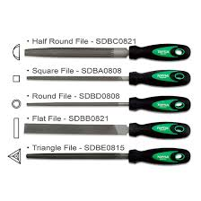

Files
Files are multi-point cutting tools. They are used to remove material by rubbing it on metals. Files are available in a number of sizes, shapes, and degrees of coarseness.
Files are classified into:
a. Flat file: This file has parallel edges for about two-thirds of the length and then it tapers in width and thickness. The faces are double cut while the edges are single cut.
b. Hand file: For a hand file, the width is constant throughout, but the thickness tapers as given in the flat file. Both faces are double cut and one edge is single cut. The remaining edge is kept uncut in order to use for filing a right-angled corner on one side only.
c. Square file: It has a square cross-section. It is parallel for two-thirds of its length and then tapers towards the tip. It is double cut on all sides. It is used for filing square corners and slots.
d. Triangular file: It has width either parallel throughout or up to the middle and then tapers towards the tip. Its section is triangular (equilateral) and the three faces are double cut and the edges single cut. It is used for filing square shoulders or corners and for sharpening woodworking saws.
e. Round file: It has a round cross-section. It carries single cut teeth all around its surface. It is normally made tapered towards the tip and is frequently known as a rat-tail file. Parallel round files having the same diameter throughout the length are also available. The round files are used for opening out holes, producing round corners, round-ended slots, etc.